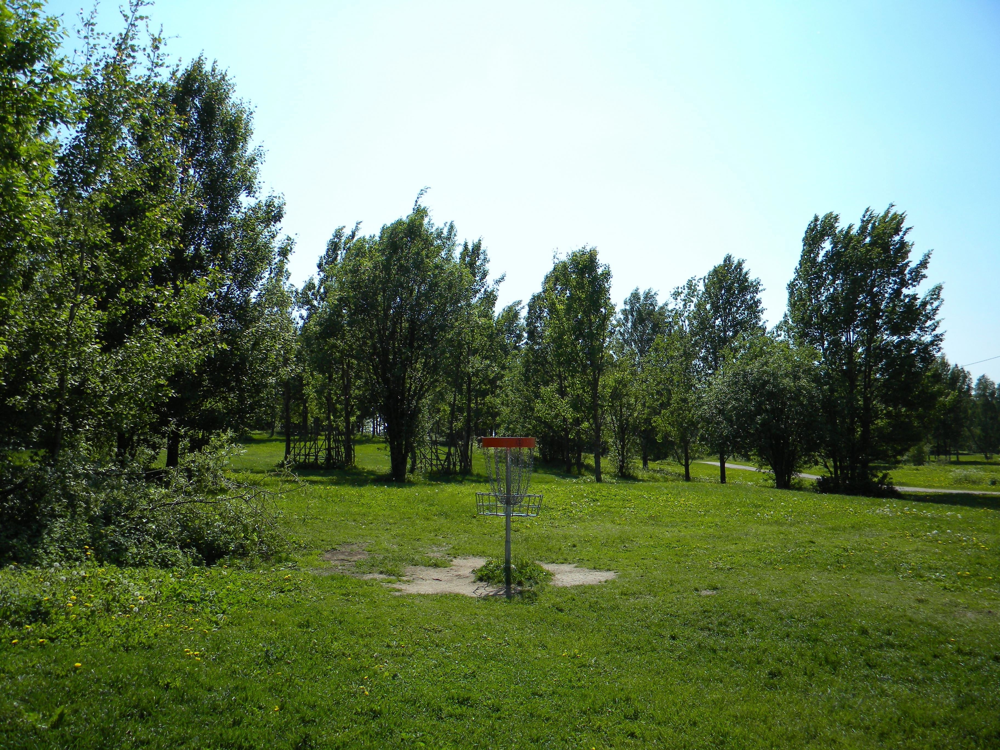

How it started
Seven throws. Then two.
I was at Valbyparken in Copenhagen with colleagues, playing disc golf. The idea is simple: get a disc into a metal basket with hanging chains in as few throws as possible.
To be honest, we were particularly bad at it. Seven throws? Usually more. Our discs started veering sideways almost as soon as they left our hands. They tilted, fell short and occasionally seemed determined to come back like boomerangs. Understanding that early sideways motion became one of the questions behind this simulation.
Then three players arrived with bags that looked as though they contained fifty discs. Two throws, and they were done. Their discs seemed to travel fifty metres in a straight line, with none of the wobbling and sideways detours we were producing.


How could I throw like that?
I had two options: spend twenty hours practising at Valbyparken, or ask my old friend STAR-CCM+ to help me understand what was happening. I chose the simulation first. Practice is still on the list.
This project explores how rotation, pressure and aerodynamic forces shape a disc’s flight. The first case is deliberately simple: a horizontal driver launched straight ahead.